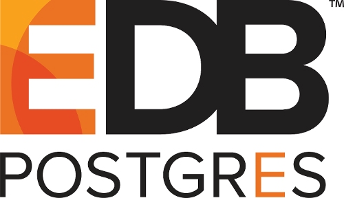
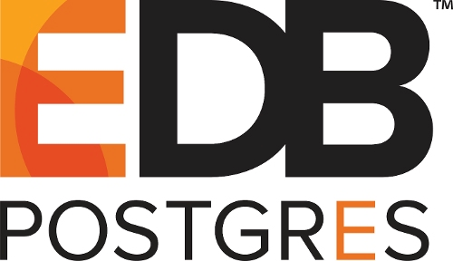
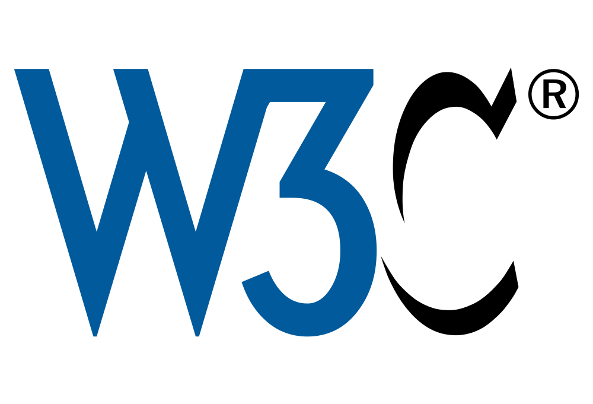
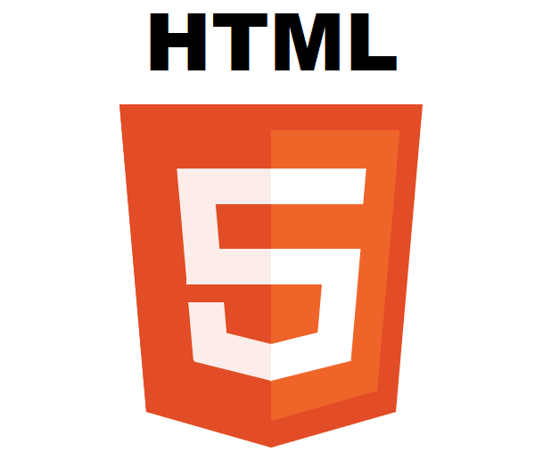
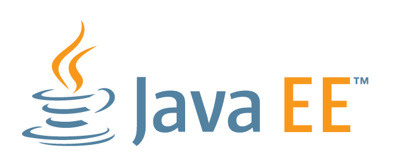
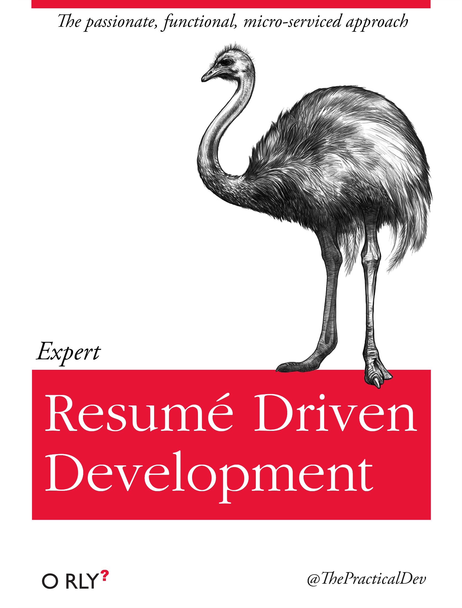
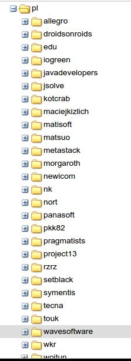
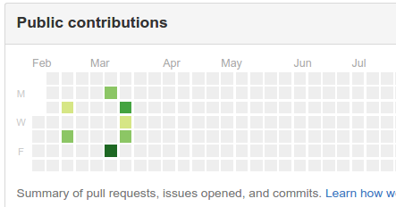

Krzysztof Suszyński
Centralny Ośrodek Informatyki
Krzysztof Suszyński
- Główny programista w COI / Trener w SAGES
- Ewangelizuje Javą i Puppetem
- Publikacje OSS @ Gov
- Wiele publikacji OSS w różnych językach: java, ruby, javascript
O czym opowiem?
- Czym jest Open Source Software (OSS)?
- Jakie zalety ma publikowanie OSS?
- Jak wprowadzić publikowanie OSS w firmie?
- Co zyskaliśmy w pl.ID dzięki publikowaniu OSS?
Dla kogo ta prezentacja?
Open Source vs
Free Software
Open Source Software (OSS)
- Program marketingowy skierowany do przedsiębiorstw
- Podkreślanie zalet technicznych i rentowności otwartych modeli rozwoju
- Pomijanie kwestii etycznych i politycznych
Free(dom) Software
 Ideologia dotycząca wytwarzania oprogramowania
Ideologia dotycząca wytwarzania oprogramowania- Skupia się na kwestiach etycznych i politycznych
- Cztery poziomy wolności: do uruchamiania, do analizy i modyfikacji, do redystrybucji i do dystrybucji zmodyfikowanego kodu
| Podobieństwa | ||
|---|---|---|
| Otwartość kodu | tak | tak |
| Wolność redystrybucji | tak | tak |
| Znaczenie | Nie myli się z freeware | Często mylone z freeware |
| Różnice | ||
|---|---|---|
| Idea | Model biznesowy, oparty o otwartość oprogramowania | Wolność do używania, modyfikacji i dystrybucji oprogramowania |
| Zakres | Nie każdy OSS jest free | Każdy free software jest OSS |
| Popularność | duża | ograniczona |
Modele biznesowe dla Open Source
Oprogramowanie otwarte nie wyklucza sprzedaży i komercyjnego wykorzystania
 

Sprzedaż dodatkowych usług
- szkolenia z obsługi
- wsparcie klienta
- dostęp do dodatkowych rozszerzeń, wtyczek, dodatków i modułów

Sposób wprowadzenia klienta w inne, płatne produkty firmy
Pobieranie opłaty za dostęp do najnowszych, często aktualizowanych wersji swoich produktów
Wersje gotowe do użytku mogą być dostarczane za dodatkową opłatą
Co zyskujemy publikując na licencji Open Source?
Nawet w tradycyjnej firmie
Mierzalne zyski
publikacji OSS
Oszczędności na infrastrukturze
- Każdy kod wymaga infrastruktury developerskiej
- Im większą jakość chcemy uzyskać, tym więcej środków trzeba wygospodarować
- Koszty licencji, serwerów i utrzymania systemów
- Continuous build, testing, inspection, integration, delivery oraz deployment
Kod otwarty najczęściej nie wymaga infrastruktury, korzysta ze wspólnych, światowych zasobów (Sponsoring)
Testowanie w różnych kontekstach
- Użytkownicy naszego kodu testują go w innych niż my okolicznościach
- Zyskujemy na testowaniu nieprzewidzianych jeszcze use case'ów
- Zyskujemy inne pomysły na użycie naszego kodu
Niestety tylko część osób zgłasza błędy. Szacuje że waha się to od 15% do 60% - zależnie od technologii, mentalności itp.
Zgłoszenia Pull Request
- Użytkownicy naszego kodu mogą zgłosić swoją, poprawioną wersję w mechaniźmie Pull Request
- Możemy wymusić odpowiednią jakość takiej zmiany przez testy i progi jakości
- Możemy zyskać poprawkę lub rozszerzenie, które może się nam przydać zupełnie za darmo
Niestety tylko część osób zgłasza PR. Szacuje, że waha się to od 5% do 30% - zależnie od technologii, mentalności itp.
Rozpoznawalność firmy
- Używanie naszego kodu przez innych programistów powoduje wzrost rozpoznawalności
- Możemy sprawdzać po ilości ściągnięć, użyć, wzmianek w portalach społecznościowych itp.
- Łatwiej o rekrutację specjalistów
- Otwartością można udowodnić jakość i wykorzystać przy wygrywaniu przetarów
Jakość kodu
- Otwartość zwykle powoduje, u programistów, chęć pisania kodu w lepszej jakości
- Podpisywanie się własnym nazwiskiem
- Kod opublikowany "raczej" nie znika z internetu
Niemierzalne zyski
publikacji OSS
Dla wielu osób sama możliwość tworzenia otwartego oprogramowania jest motywacją do pracy
Dużo prościej nawiązać współpracę między firmami, łącząc wysiłki działów R&D w ramach różnych inicjatyw
  Walka z
Potęcjalne problemy przy wdrożeniu
Brak zrozumienia istoty OSS i strach przed nieznanym
- kierownictwo
- zespoły prawne
- zespoły finansowe
- zespoły developerskie i administracyjne
Mylenie z rezygnacją z zysków a co za tym idzie niczym nie uzasadniony strachem przed konkurencją
Kompleksy
- Nieuzasadnione kompleksy
- Bezsensowna chciwość
- Niska samoocena
Tylko 27 groupid w Sonatype OSS Staging
Czas na Zmianę!
Jaki kod warto publikować, a jaki nie?
Jakiego kodu nie publikować?
- Pełnych, kompletnych rozwiązań
- Produktów skierowanych do końcowego, nietechnicznego odbiorcy
- Fragmentów strategicznych dla sukcesu i powodzenia firmy
- Kodu niskiej jakości, lub mocno związanego z celem biznesowym
Jaki kod publikować?
- Biblioteki, reużywalne, ogólnego przeznaczenia
- Narzędzia dla programistów i administratorów
- Gotowe aplikacje skierowane do technicznego odbiorcy
- By developers, for developers
Kiedy publikować i jak często?
- Jak najwcześniej (nawet wersje wstępne w trakcie rozwoju)
- Jak najczęsciej (jak najmniejsze wdrożenia)
Ekstremalny przypadek
Krótka historia OSS w

Jak wybraliśmy kod do publikacji i czemu?
- Kod narzędziowy, przydatny w innych projektach
- Nie związany z biznesowym celem
- Kluczowe, strategiczne fragmenty jako reużywalne moduły i bibioteki
Co zyskaliśmy w COI dzięki OSS?
- Wiedza i potwierdzenie poprawności tworzonych rozwiązań
- Uproszczenia w infrastrukturze IT
- Zgłoszenia o błędach i poprawki PR
- Rozpoznawalność i motywację pracowników
- Projekt pl.ID się udał!
Co planujemy w przyszłości?
- Powiększenie ilości publikowanego kodu a także zakresu
- Współpraca przy standardach webowych
- Sky is the limit!
Podsumowując
- Biznesowy, realny model
- Szansa do wykorzystania
- Nowoczesne myślenie
